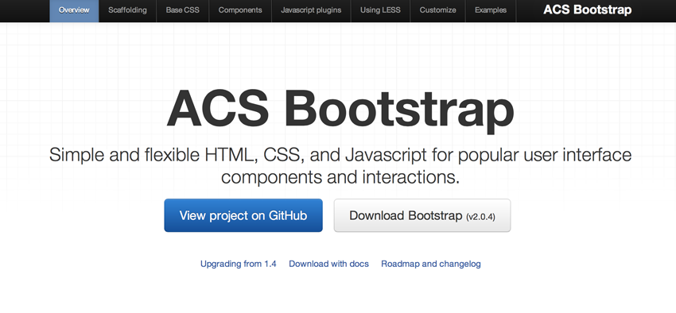
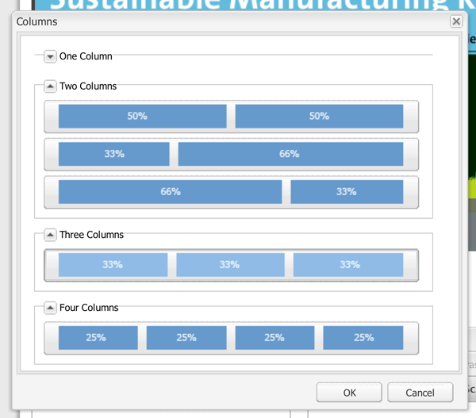
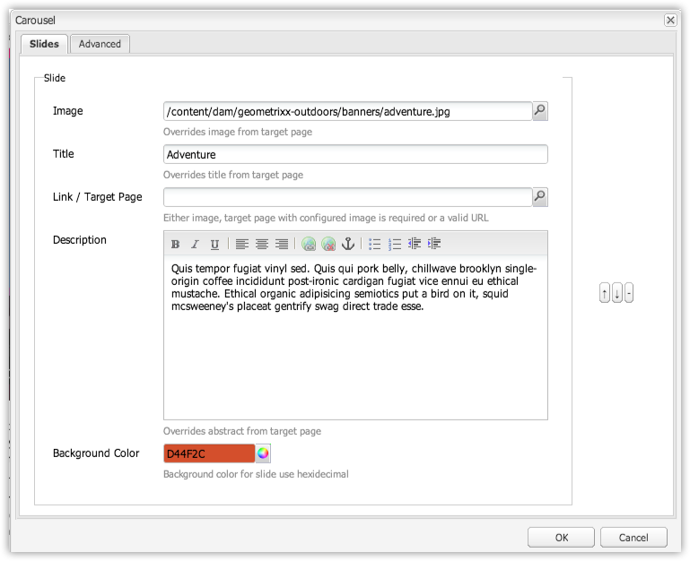
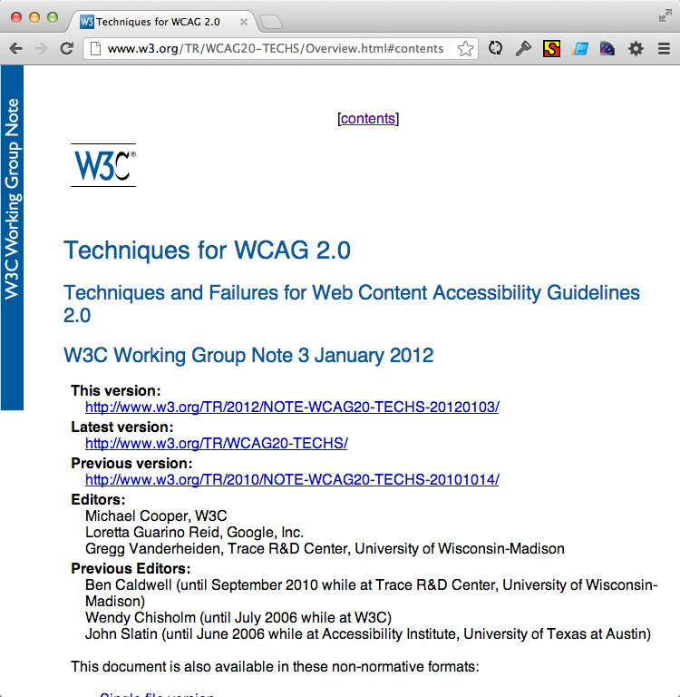
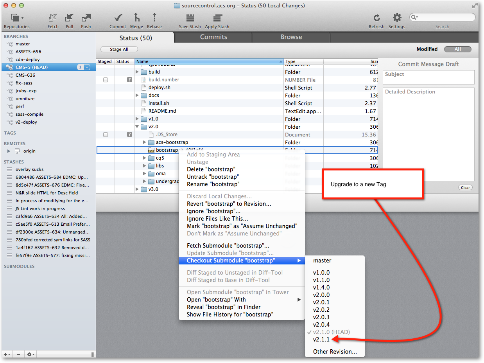

American Chemical Society
A scientific society supporting scientific inquiry in the field of Chemistry
-
Membership: 164,000
-
Journals: 39
-
Chemical abstracts: 36 million
-
Organic and inorganic substances registered: 68 million
-
ACS journal article downloads: 70 million
-
Employees: 1,981
Current State
-
ACS has an extensive Web presence and portfolio of Web properties— currently focused on 'acs.org'
-
Migrating from Stellant— currently in active development.
-
Re-Launch planned Q2-2013.
Priorities and Current Needs
-
Improve authoring experience and efficiency— Make it easier and more efficient to get content into the system
-
Make content more accessible— WCAG 2.0, mobile and tablet-optimized experiences.
-
Provide better end-user experience: Using modern and engaging UI elements.
Twitter Bootstrap
-
http://twitter.github.com/bootstrap/
-
Open-source front-end framework
-
The toolset includes pre-developed HTML, CSS templates, and JavaScript plugins
-
Typography, forms, buttons, charts, navigation and other UI components.
Twitter Bootstrap: ACS Fork

Bootstrap CQ
-
CQ's "out-of-the-box" components generally functionally sufficient— but lacking polish in execution from a front-end design and coding perspective.
-
Coverage— overlays nicely with CQ counterpart functionality and fills in some gaps.
How We Use Bootstrap
-
Incorporate typography and grid system.
-
Standardizing on a well-documented framework improves consistency of our code base.
-
Thinking in terms of using Bootstrap to give CQ's foundation / "out-of-the-box" components a facelift.
How We Use Bootstrap
-
The base UI elements in Twitter Bootstrap provide coverage for a number of CQ's out-of-the-box components— Grid, Column Control, Navigation, BreadCrumb, Modal
-
In addition, there are a number of popular components and Bootstrap extensions that overlay nicely— Carousel, Tabs
Column Control Example
-
Bootstrap implements a 12-column grid structure— fixed-width or fluid
-
The markup for using bootstrap's grid system is clean— easy to incorporate
-
Configuration of CQ's OOB components is largely a matter of mapping your grid system's styles to the CQ-generated classes
-
Since bootstrap's grid system is so lightweight— it was easier to replace the foundation components with column "presets" matching our template design
-
The time saved grafting CSS to CQ's column control configuration was spent on the authoring dialogs— hopefully making them easier to use

Carousel Example
-
CQ counterpart components are lacking— the 'Carousel' and 'Slideshow' Components
-
Bootstrap provides an attractive and feature-rich carousel— for featuring images and content
Customizable and Pretty

Support for WCAG 2.0 AA

Responsive
Responsive
Responsive
Responsive
SEO Friendly
<!--Slide #1 -->
<div id="acscarousel_slide_1" class="item" style="background-color: #D44F2C"
aria-hidden="false">
<img src="/content/dam/geometrixx-outdoors/banners/adventure.jpg" alt="Slide 1"
aria-describedby="acscarousel_slide_caption_1" />
<div id="acscarousel_slide_caption_1" class="carousel-caption" style=
"background-color: #262626;opacity:0.85;">
<h4 tabindex="-1" style="color: #FFFFFF">Adventure</h4>
<p>Quis tempor fugiat vinyl sed. Quis qui pork belly,
chillwave brooklyn single-origin coffee incididunt post-ironic
cardigan fugiat vice ennui eu ethical mustache. Ethical organic
adipisicing semiotics put a bird on it, squid mcsweeney's placeat
gentrify swag direct trade esse. </p>
</div>
</div>
Upgradeable

Where We Go from Here
-
"Update-proofing" our implementation— We don't make changes to Bootstrap's core files. It's integrated as a git submodule to preserve update options.
-
Mobile optimization at the compnent level
Questions
Your browser doesn't support the features required by impress.js, so you are presented with a simplified version of this presentation.
For the best experience please use the latest Chrome, Safari or Firefox browser.